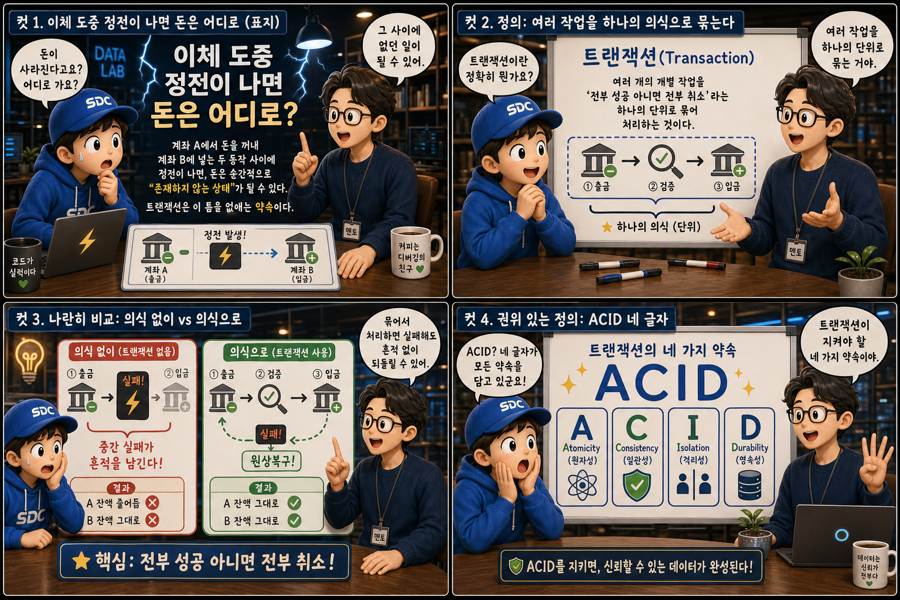
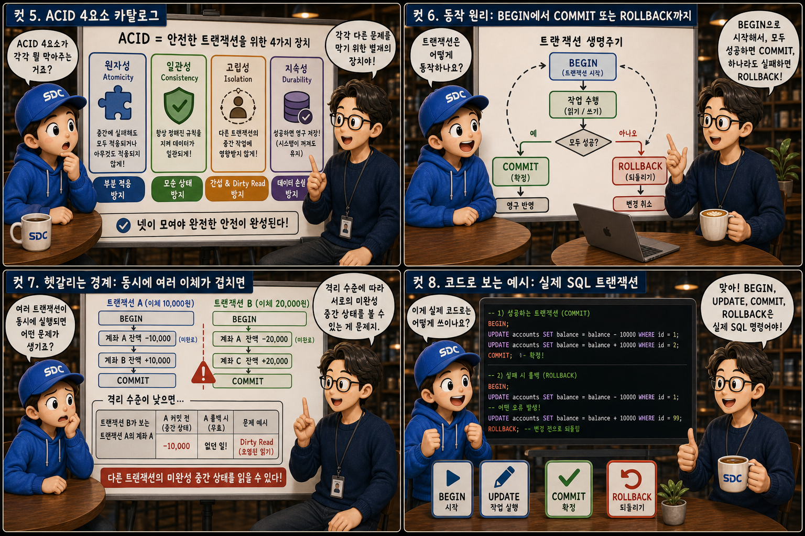
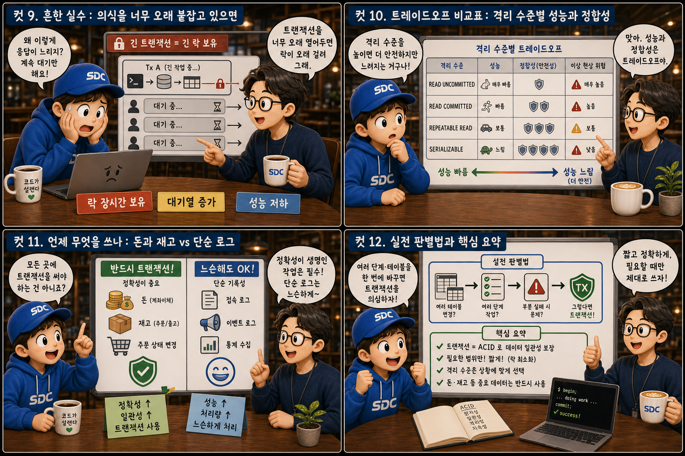

은행 금고에서 치러지는 ‘이체 의식’에 비유해, 반쪽짜리 데이터를 막는 약속을 12컷으로 풀어봅니다.
COMMITorROLLBACK
계좌 A에서 돈을 꺼내 계좌 B에 넣는 그 짧은 순간, 서버가 멈추면 돈은 어디로 갈까요? A에서는 이미 사라졌는데 B에는 아직 도착하지 않은 — 돈이 잠시 “존재하지 않는 상태”가 될 수 있습니다. 트랜잭션은 바로 이 틈을 없애기 위한 데이터베이스의 핵심 약속입니다. 이 글에서는 은행 금고 안에서 치러지는 하나의 이체 의식에 빗대어, 전부 성공하면 COMMIT으로 확정하고 하나라도 실패하면 ROLLBACK으로 되돌리는 트랜잭션의 원리와 네 가지 서약 ACID를 하나씩 살펴봅니다.
PART 1 / 3 — 정전의 순간과 하나의 의식 (컷 01–04)

fourcut-01 — 컷 01 ~ 04
컷 01
이체 도중 정전이 나면 돈은 어디로
계좌 A에서 돈을 꺼내 계좌 B에 넣는 두 동작 사이에 정전이 나면, 돈은 순간적으로 “존재하지 않는 상태”가 될 수 있다.
반쯤 열린 금고 문 앞, 서랍 A에서 나온 동전 더미가 서랍 B로 향하는 중간 지점에서 공중에 멈춰 있습니다. 그 위로 정전 경고등이 깜빡입니다. 서랍 A는 이미 비었고 서랍 B는 아직 비어 있는 — 돈이 사라진 것처럼 보이는 순간이죠. 계좌이체는 겉보기엔 하나의 작업이지만 내부적으로는 “A에서 빼기”와 “B에 넣기”라는 최소 두 단계로 이뤄집니다. 이 두 단계 사이에 서버가 멈추면 반쪽짜리 상태가 생길 수 있고, 트랜잭션은 바로 이런 틈을 허용하지 않기 위해 만들어진 데이터베이스의 핵심 약속입니다.
컷 02
정의부터: 여러 작업을 하나의 의식으로 묶는다
트랜잭션이란 여러 개의 개별 작업을 “전부 성공 아니면 전부 취소”라는 하나의 단위로 묶어 처리하는 것이다.
금고 안 의식대 위에 “출금 -10,000”과 “입금 +10,000”이라는 두 개의 촛불이 나란히 켜져 있고, 그 둘을 TRANSACTION이라 새겨진 투명한 유리 종 하나가 감싸고 있습니다. 트랜잭션은 하나 이상의 데이터 조작을 논리적으로 하나의 작업 단위로 묶는 것입니다. 이 단위 안의 모든 동작은 반드시 전부 성공하여 반영되거나, 하나라도 실패하면 전부 없었던 일로 되돌아가야 합니다. 이 “전부 아니면 전무”라는 원칙 덕분에 이체 도중 정전이 나도 절반짜리 결과가 남지 않습니다.
컷 03
나란히 비교: 의식 없이 vs 의식으로
트랜잭션 없이 두 동작을 따로 처리하면 중간 실패가 흔적을 남기지만, 트랜잭션으로 묶으면 실패 시 흔적 없이 원상복구된다.
화면 왼쪽, 의식 없이 처리한 세계에서는 출금 촛불만 꺼진 채 크림슨 균열이 갈라져 있습니다 — 계좌 A만 -10,000, 계좌 B는 그대로. 오른쪽, 유리 종으로 묶은 세계에서는 실패의 빛이 종을 휩쓸어도 두 촛불이 동시에 되감기듯 원래 모습으로 돌아옵니다 — 계좌 A, B 모두 원래대로 복구. 트랜잭션 없이 출금과 입금을 각각 실행하면 입금이 실패하는 순간 A에서만 돈이 빠진 채 남지만, 하나의 트랜잭션으로 묶으면 데이터베이스가 자동으로 롤백을 실행해 출금 자체도 없었던 일로 되돌립니다. 결국 데이터는 항상 실행 전 상태이거나 완전히 끝난 상태, 둘 중 하나로만 관찰됩니다. 실패했을 때 무엇이 남는가 — 그것이 핵심 차이입니다.
컷 04
권위 있는 정의: ACID 네 글자
트랜잭션이 지켜야 할 네 가지 약속을 묶어 ACID(Atomicity, Consistency, Isolation, Durability)라 부른다.
A — ATOMICITY
원자성 전부 성공 아니면 전부 취소
C — CONSISTENCY
일관성 규칙은 작업 전후 항상 유지
I — ISOLATION
고립성 동시 실행끼리 간섭 없음
D — DURABILITY
지속성 커밋된 결과는 영구 보존
Atomicity · Consistency · Isolation · Durability — 데이터베이스의 네 가지 서약
금고 벽 한가운데, 딥그린 금속 프레임에 둘러싸인 석판에 네 글자 A-C-I-D가 각인되어 있습니다. 원자성은 전부 성공 아니면 전부 취소를, 일관성은 작업 전후로 데이터 규칙이 항상 유지됨을, 고립성은 동시에 실행되는 트랜잭션끼리 서로 간섭하지 않음을, 지속성은 한번 커밋된 결과는 어떤 장애가 나도 사라지지 않음을 뜻합니다. 이 네 가지가 모두 지켜질 때 비로소 데이터베이스는 신뢰할 수 있는 금고 역할을 합니다.
PART 2 / 3 — ACID의 속살과 동작 원리 (컷 05–08)

fourcut-02 — 컷 05 ~ 08
컷 05
ACID 4요소 카탈로그: 네 개의 진열장
원자성, 일관성, 고립성, 지속성은 각각 다른 문제를 막기 위한 별개의 장치이며, 넷이 모여야 완전한 안전이 완성된다.
금고 전시실에 네 개의 진열장이 나란히 놓여 있습니다. 첫 진열장의 저울 위에는 동전 뭉치 전체 아니면 텅 빈 접시만 놓일 수 있고(전부 or 전무), 두 번째 진열장의 장부는 합계 칸이 항상 같은 숫자를 가리키며(규칙은 항상 유지), 세 번째 진열장의 두 커튼은 각자의 이체 의식을 서로에게서 감추고(서로 간섭 없음), 네 번째 진열장의 금고 서랍은 콘크리트 벽 속에 박혀 정전이 나도 꺼지지 않습니다(저장되면 영구). 원자성은 여러 작업이 쪼개지지 않는 하나의 덩어리로 취급됨을, 일관성은 잔액 합계나 무결성 제약 같은 규칙이 깨지지 않음을, 고립성은 동시에 실행되는 트랜잭션의 중간 상태가 서로에게 보이지 않음을, 지속성은 커밋이 완료된 순간부터 그 결과가 디스크에 안전하게 남아 있음을 보장합니다.
컷 06
동작 원리: BEGIN에서 COMMIT 또는 ROLLBACK까지
트랜잭션은 BEGIN으로 시작해 작업을 실행하고, 모두 성공하면 COMMIT으로 확정하고 하나라도 실패하면 ROLLBACK으로 되돌리는 순환 구조로 동작한다.
BEGIN→UPDATE A→UPDATE B→성공 시 COMMIT 🔒/실패 시 ROLLBACK ↺⇢시작 전 상태로
금고 바닥에 지하철 노선도처럼 그려진 순환 길 위에 네 개의 정거장이 있습니다. 트랜잭션은 BEGIN 명령으로 시작되어 그 사이에 실행되는 모든 SQL 문을 하나의 단위로 묶습니다. 작업들이 모두 문제없이 끝나면 COMMIT을 실행해 변경 사항을 영구적으로 확정하고 — 금고 문이 굳게 닫히고 자물쇠가 잠기듯 — 도중에 오류나 제약 위반이 발생하면 ROLLBACK을 실행해 트랜잭션이 시작되기 전 상태로 완전히 되돌립니다. 이 단순한 순환 구조 덕분에 애플리케이션 코드는 중간 실패를 걱정하지 않고 여러 작업을 한 묶음으로 다룰 수 있습니다.
컷 07
헷갈리는 경계: 동시에 여러 이체가 겹치면
여러 트랜잭션이 동시에 실행될 때 격리 수준에 따라 서로의 미완성 중간 상태를 볼 수도 있는데, 이것이 dirty read 같은 문제다.
금고 안에 두 개의 유리 종 의식대가 나란히 진행 중입니다. 왼쪽 의식은 아직 COMMIT 전인데, 오른쪽 의식을 치르는 인물이 커튼 틈으로 왼쪽의 확정되지 않은 숫자를 훔쳐봅니다 — 이것이 dirty read입니다. 만약 왼쪽 의식이 결국 ROLLBACK 되면, 오른쪽이 본 숫자는 처음부터 존재하지 않았던 허상이 됩니다. 실무에서는 여러 사용자의 트랜잭션이 동시에 실행되기 때문에 완벽한 고립을 항상 최고 수준으로 유지하면 성능이 크게 떨어집니다. 그래서 데이터베이스는 격리 수준(Isolation Level)이라는 조절 장치를 제공하며, 낮은 수준에서는 커밋되지 않은 중간 값을 읽어버리는 현상이 발생할 수 있습니다. 커튼의 두께가 곧 격리 수준입니다.
컷 08
코드로 보는 예시: 실제 SQL 트랜잭션
BEGIN, UPDATE, COMMIT, ROLLBACK은 추상적인 개념이 아니라 실제로 SQL 코드 몇 줄로 그대로 작성되는 명령이다.
성공 흐름 — COMMIT으로 확정
BEGIN;
UPDATE accounts SET balance = balance - 10000
WHERE id = 'A';
UPDATE accounts SET balance = balance + 10000
WHERE id = 'B';
COMMIT; -- 두 UPDATE 모두 영구 확정 ✓
실패 흐름 — ROLLBACK으로 되감기
BEGIN;
UPDATE accounts SET balance = balance - 10000
WHERE id = 'A';
-- 여기서 오류 감지! (입금 실패)ROLLBACK; -- 출금까지 전부 취소 ↺-- 이 네 줄 사이가 하나의 트랜잭션이다
실제 데이터베이스에서는 BEGIN 명령으로 트랜잭션을 시작한 뒤 두 개의 UPDATE 문으로 계좌 A에서 돈을 빼고 계좌 B에 더합니다. 두 UPDATE가 모두 오류 없이 끝나면 COMMIT을 호출해 변경을 확정하고, 애플리케이션 로직에서 오류가 감지되면 COMMIT 대신 ROLLBACK을 호출해 두 UPDATE를 모두 취소합니다. 대부분의 웹 프레임워크는 이 과정을 try catch 구문과 자동으로 연결해, 예외가 발생하면 자동으로 ROLLBACK이 실행되도록 감싸줍니다.
PART 3 / 3 — 실전 감각과 요약 (컷 09–12)

fourcut-03 — 컷 09 ~ 12
컷 09
흔한 실수: 의식을 너무 오래 붙잡고 있으면
트랜잭션을 필요 이상으로 오래 열어두면 락이 오래 걸려 다른 요청들이 줄지어 기다리게 된다.
⚠ long transaction = long lock
트랜잭션이 열려 있는 동안 데이터베이스는 관련된 행이나 테이블에 락(lock)을 걸어 다른 트랜잭션이 같은 데이터를 건드리지 못하게 합니다. 트랜잭션 안에서 외부 API 호출이나 이메일 전송처럼 느리고 무관한 작업을 함께 처리하면, 락이 필요 이상으로 오래 유지되어 뒤따르는 요청들이 줄줄이 대기하게 됩니다.
✓ keep transactions short
트랜잭션에는 반드시 필요한 데이터 작업만 담고, 느린 작업은 트랜잭션 바깥으로 빼서 최대한 짧게 유지하는 것이 실무의 기본 원칙입니다.
촛불을 켠 채 이메일을 보내고 외부 API를 호출하며 의식을 끝내지 않는 사제, 그리고 그 뒤로 모래시계를 들고 초조하게 늘어선 긴 대기줄을 상상해 보세요. 유리 종에 칭칭 감긴 사슬이 바로 락입니다. 의식은 짧게, 잡무는 의식 바깥에서.
컷 10
트레이드오프 비교표: 격리 수준별 성능과 정합성
격리 수준이 낮을수록 성능은 빠르지만 이상 현상 위험이 커지고, 높을수록 안전하지만 성능이 느려지는 트레이드오프가 있다.
커튼이 두꺼울수록 안전하고, 얇을수록 빠르다 — 성능 ↔ 정합성
격리 수준
막아주는 것 (정합성)
남는 위험 · 성능
READ UNCOMMITTED
거의 없음 (커튼이 투명)
dirty read 허용 · 가장 빠름
READ COMMITTED
dirty read 차단
non-repeatable read 남음 · 빠름
REPEATABLE READ
non-repeatable read까지 차단
phantom read 여지 · 보통
SERIALIZABLE
모든 이상 현상 차단 (금고 벽)
순차 실행 수준의 비용 · 가장 느림
READ UNCOMMITTED는 가장 빠르지만 아직 커밋되지 않은 값을 읽는 dirty read를 허용하고, READ COMMITTED는 이를 막지만 같은 트랜잭션 안에서 같은 행을 두 번 읽었을 때 값이 달라지는 non-repeatable read가 남습니다. REPEATABLE READ는 이 문제까지 막지만 새로 삽입된 행이 보이는 phantom read 여지가 있고, SERIALIZABLE은 이 모든 이상 현상을 막는 대신 트랜잭션끼리 순차적으로 실행되는 것과 같은 효과를 내어 성능 비용이 가장 큽니다. 격리 수준을 고르는 일은 결국 얼마나 엄격한 정합성이 필요한지와 얼마나 많은 동시 요청을 처리해야 하는지 사이의 균형점을 찾는 일입니다.
컷 11
언제 무엇을 쓰나: 돈과 재고 vs 단순 로그
정확성이 생명인 돈이나 재고 같은 작업에는 반드시 트랜잭션을 쓰고, 단순 기록성 로그에는 느슨하게 다뤄도 된다.
🔐 금고 안 — 반드시 트랜잭션
계좌 이체
주문 재고 차감
결제 처리
📝 금고 밖 접수대 — 느슨하게 처리 가능
페이지 조회 로그
클릭 이벤트 기록
통계성 집계 데이터
계좌 잔액, 재고 수량, 결제 상태처럼 값이 틀리면 실제 손해나 신뢰 문제로 이어지는 데이터는 반드시 트랜잭션으로 묶어 원자성과 정합성을 보장해야 합니다. 반면 단순 조회 로그나 클릭 통계처럼 한두 건 유실되거나 약간 어긋나도 비즈니스에 치명적이지 않은 데이터는 트랜잭션 비용을 들이지 않고 더 가볍게 처리해도 충분합니다. 트랜잭션은 공짜가 아니라 락과 성능 비용이 따르는 도구이므로, 그 비용을 지불할 가치가 있는 곳에만 신중하게 사용하는 것이 좋은 설계입니다. 선택의 기준은 결국 “정확성의 무게”입니다.
컷 12
실전 판별법과 핵심 요약
여러 테이블이나 여러 단계를 한 번에 바꿔야 하는 순간을 만나면 가장 먼저 트랜잭션을 의심하라.
이야기는 다시 금고 정문 앞으로 돌아옵니다. 이번에는 정전 경고등 대신 딥그린 안정등이 켜져 있습니다. 코드를 작성하다가 하나의 요청 안에서 여러 테이블 혹은 여러 행을 동시에 바꿔야 하는 상황을 만난다면, 그 순간이 바로 트랜잭션을 의심해야 할 신호입니다. 트랜잭션은 원자성으로 전부 성공 아니면 전부 취소를 보장하고, 일관성으로 데이터 규칙을 지키며, 고립성으로 동시 실행 간 간섭을 막고, 지속성으로 커밋된 결과를 영구히 지킵니다. 이 네 가지 약속이 있기에 계좌이체 도중 정전이 나도 돈은 절대 허공으로 사라지지 않습니다.
원자성: 전부 or 전무일관성: 규칙 유지고립성: 서로 간섭 없음지속성: 커밋되면 영구BEGIN-COMMIT-ROLLBACK 순환격리 수준은 성능과 정합성의 균형
하나의 금고, 네 가지 서약
트랜잭션은 여러 단계의 작업을 하나의 의식으로 묶어, 전부 성공하면 COMMIT으로 확정하고 하나라도 실패하면 ROLLBACK으로 흔적 없이 되돌립니다. 원자성 · 일관성 · 고립성 · 지속성이라는 네 가지 서약이 지켜지는 한, 이체 도중 정전이 나도 돈은 절대 허공으로 사라지지 않습니다.